|
||
| 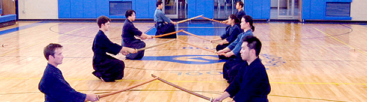 | ||
| Home Practice Info Events Members Photos Links | ||
News
14th Annual Goyokai Kendo Tournament(2 & 3 Nov 2013)
We are pleased to announce that Shufukai will be hosting the 14th annual Goyokai Kendo Tournament. The event will be held on Saturday 2 November and Sunday 3 November. Saturday will be Godo Geiko with doors opening at 4:30pm. Sunday will be Shiai with doors opening at 7:30pm. To view the official invitation, registration forms, and schedule click here doc or pdf.
Please join us for a great Kendo weekend. Thank you and hope to see everyone at the event!
AEUSKF Shinpan Seminar and Shiai Practice (29 Sept 2013)
We will be hosting the New England Region Shinpan Seminar and Shiai Practice. The seminar is from 1:00-6:00pm on 29 September and will take place at our usual location.
Please join us, registration is free for AEUSKF members and $10 otherwise. The registration form can be found here. Please complete and return the form by 20 September so we can plan accordingly.
Thank you and hope to see everyone at the event!
Shufukai Kids Class!
We are pleased to announce the start of a kids only class. It will be starting on 8 September 2013. Classes will be primarily for children 5 to 10+ years of age. Meeting times will be Sundays from 1:30-2:30pm. If you have a child or children interested in trying Kendo please contact us for further details. No previous Kendo experience is required.
13th Goyokai Kendo Tournament (10/27/12 - 10/28/12) Videos
Videos for the team division final and individual (4dan above semi final and final) are up.
13th Goyokai Kendo Tournament (10/27/12 - 10/28/12)
The 13th Goyokai Kendo tournament was held at our dojo.
We had a joint practice and welcome Dinner on Saturday and the tournament on Sunday.
We had 80 participatns for the practice and dinner; and 130 for the tournament.
It was a great success.
Congratulations for all division's winner. (please see our blog for the whole results.)
Shufukai A team won the team division .
Toshihiro Ogimura, 1st place in 4 dan and above
Tatsuya Izumi, 2nd place in 4 dan and above
Tim Rasmusson, 3rd place in 4 dan and above
Naoki Watanabe, 3rd place in 4 dan and above
Isamu Katakura, 3rd place in Shodan
Miyuki Katakura, 1st place in Women's Kyu.
Please see here for pictures.?(added more pictures on 11/6/12)
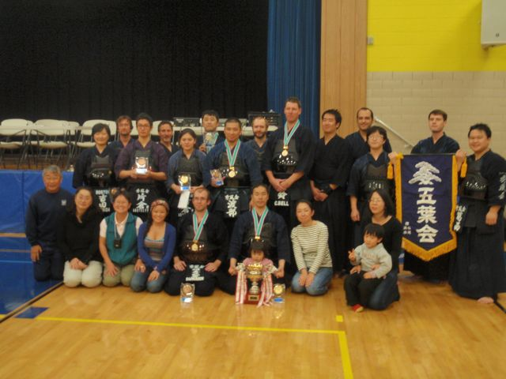
17th Goyokai Kendo Seminar (9/28/12 - 9/30/12)
The 17th Goyokai Kendo Seminar was held at NY Shinbukan Dojo from 9/28 to 9/30.
We had two guest senseis from Japan. Hironori Tahara-sensei, Hanshi 8 dan and Akihito Nakamura-sensei, Kyoshi 8 dan. We had total 110 participants for the three days. Everybody suffered from blisters on our hands and feet, as well as whole body muscle ache while having a so much fun!
We learned a lot from Tahara-sensei and Nakamura-sensei .
Please visit our blog for more detailed.
Please see here for pictures.
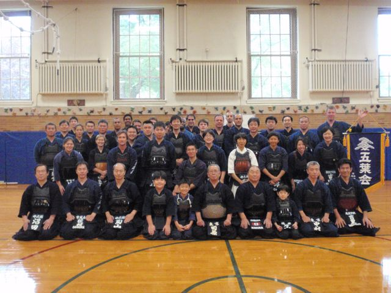
AEUSKF Tournament (8/19/12)
The AEUSKF tournament was held in Manhattan, NY.
8 members participated in the tournament.
Miyuki Katakura, Women's kyu division 3rd place
Katutoshi Kawakami, Men's kyu division 3rd place
Naoki Watanabe, Men's 1-2dan division 1st place
Shufukai Team, Best 8
Congratulations!
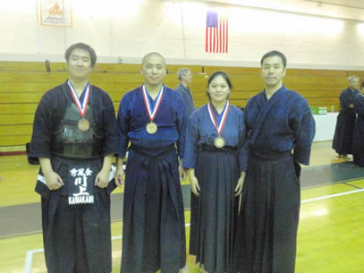
Promotion Test Results (7/22/12)
The promotion test was held in two locations on 7/22.
One was the AEUSKF promotion test (kyu to 3 dan) that was held at our dojo.
The result for our members was as follows:
Miyuki Katakura passed her 1 kyu
Katsutoshi Kawakami passed his Shodan
Nick Blake passed his 2 dan
Andy Linfoot passed his 3 dan
Craig Bell passed his 3 dan. Congratulations everybody!
The other one was the AUSKF Kodansha test that was held in Las Vegas.
The result of our member was follows:
Tatsuya Izumi passed his 5 dan. Congratulations Izumi-sensei!
University of Waterloo Kendo Club 25th Anniversary Kendo Tournament (7/14/12)
The University of Waterloo Kendo Club (Ontario, Canada) hosted their 25th Anniversary Kendo Tournament on July 14, 2012. One of our members (Tim) graduated from this college and he is one of the alumni of this Kendo Club. Therefore, Tim and four of our members (Phillip, Craig, Andy and Ogi) went to participate in this tournament to celebrate their 25th anniversary.
Ogimura-sensei won the first place in 4 dan and up division. Please see our blog for more detailed.
See the whole result from here.
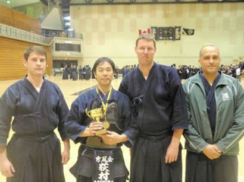
5 Dojo's Joint Practice (6/30/12)
On June 30, we had a joint practice at NY Shinbukan. Participated dojos are NY Shinbukan, NY Kenshinkai, Garden State Kendo Alliance, Boston Kendo Kyokai and Shufukai. Also a few friends from NYC Kendo club joined us.
This practice was planed and held to simply have a fun with friend dojos.
Please see our blog for more detailed story.
Please se some pictures from here.
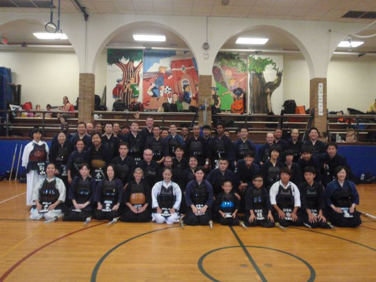
Farewell practice and party for Ayano, Teiji and Mika (5/13 and 6/3/2012)
Ayano who had been visiting our dojo for almost one year was going back to Japan. Teiji and Mika who had been a Shufukai member for three years were moving to L.A. So we had farewell keiko and party for them on 5/13 (for Ayano) and 6/3 (for Teiji and Mika).
All of them did keiko with all participants and then kakari-geiko to everybody as a farewell keiko.
Thank you and good-luck to three of them!
Please see our blog for more detailed information.
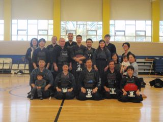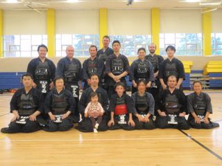
Masachusetts State Rensei Kendo Tournament (5/20/2012)
Following the AEUSKF shinpan seminar, we had the 2nd MA state kendo tournament.
All participants could generalize and utilize what they have learned in both of the shiai and shinpan seminar. All divisions had a round robin and then the tournament, so that all participants had at least 8 matches to compete including the team matches. 3 dan and above division's winner was Gin Park from Cornell University and the team division's winner was Boston Kendo Kyokai. Please see our blog for more detailed information and whole results.
The Kendostyle donated some gift cards to the winner from each division. Thank you very much!
AEUSKF Shinpan Seminar (5/20/2012)
The AEUSKF Shinpan seminar was held at Shufukai dojo on May 20, 2012.
Three instructors who participated in the IKF Shinpan Seminar in January 2012 led this seminar.
We had 50 participants who learned basic and advanced shinpan skills as well as practice shiai.
To ensure that all participants learn something, we also had a shiai seminar ran at the same time.
Please see our blog for more detailed information.
Garden State Kendo Tournament (4/28/2012)
Garden State Kendo Alliance hosted their 1st Kendo Tournament.
7 members from Shufukai participated in and Izumi-san got 2nd place in 4th dan and above division.
Congratulations !
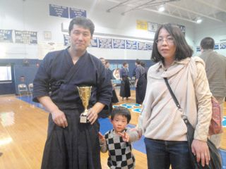
AEUSKF Promotion Test (4/8/2012)
Isamu Katakura Sho-dan
Teiji Tsuruta 3-kyu
Congratulations!
Special Practrice with Futagoishi-sensei (2/16/2012)
Futagoishi-sensei came to the East Coast (NY, GA, D.C., MA and MI) as the AUSKF Educational Tour. Futagoishi-sensei came to Shufukai dojo and gave us some lecture. He went over some manners, and basic of Kendo. We also had a chance to practice with him during ji-keiko.
Please see our blog for more detailed information and more pictures.
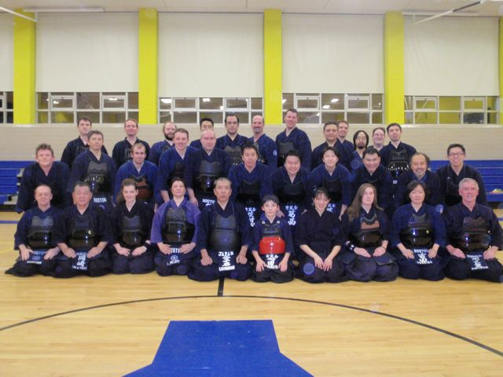
The MA state's joint practice (1/15/2012)
The MA state’s joint practice was held on January 15, 2012 as a MA keiko-hajime (First practice in 2012.)
Members from Shufukai, Boston Kendo Kyokai, Seizankai, Doshikai and Shodokan participated in this event. We did kihon (basics), shiai practices, and ji-keiko from 2 p.m. to 5:45 p.m. All of 40 participants enjoyed the practice and had a great time. We also had a New Years’ party at the Rick’s café after the practice.
The Shufukai Japan Tour (10/31 ~ 11/12/2011)
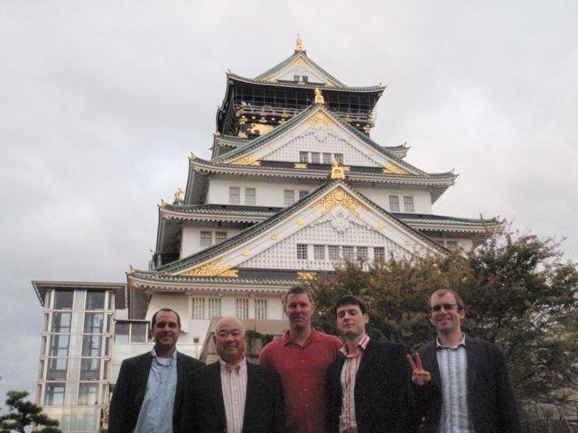
5 members of Shufukai went to Japan to practice kendo!
We went to Tokyo, Fukuoka, Osaka and Kyoto to visit 10 different places and practiced 12 times with in 10days out of 13 days we were in Japan and watch the All Japan Kendo Championship Tournament in live. (Ogimura-sensei practiced 13 times in 11 days!)
Everyone had a great time practicing Kendo and drinking while in Japan.
Please see our blog for more detail information.
The 12th Goyokai Kendo Tournament (10/22 and 23/2011)
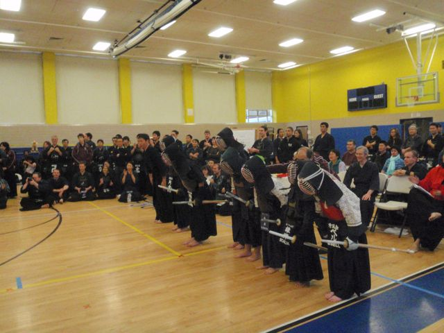
The 12 Goyokai tournament was held on October 22 and 23, 2011 at Shufukai dojo. This time we had 140 participants and there were a lot of hot matches in all divisions.
Especially we had 14 youth participants this year (we had 6 last year) and they competed in individual division (Youth division) and also in a team division. (Boston v.s. New York).All children were so excited, but audiences were more excited as they were at Boston Red Sox vs. NY Yankees. All kids seemed enjoy their match.
Please see our blog for all results.
The All US Kendo Tournament (8/12 and 13/2011)
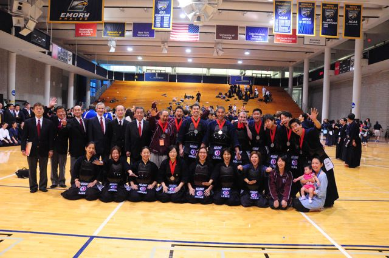
The All US Kendo Championship was held on August 12 and 13, 2011 in Atlanta.
Ogi and Tim from Shufukai and Toshimi from Boston Kendo Kyokai were selected and participated in the tournament representing All Eastern Kendo Federation.Toshimi-san got a second place in Women’s division and Men’s team got a second place in Team division where Tim competed in Ji-ho and Ogi in Taisho.
Please see our blog for more information.
The 11th Goyokai Kendo Tournament (11/6 and 7/2010)
The 11th Goyokai Kendo Tournament was held in Shufukai dojo on November 6 and 7.
It went very well and all participants competed with their best. Thank you for all participants and Goyokai members, Boston Kendo Kyokai members and all other volunteers for your support and hard work.
Miyuki got 3rd place, Teiji got 2nd place and Skyler got a fighting spirit award in Jr. division. Nick got 3rd place in 1-dan division. Tim got 2nd place in 3 dan division. Shufukai A team got 3rd place in the team division. Congratulations!!
Please see the whole results at the Shufukai blog.
AEUSKF Promotion Test (10/24/2010)
Tatsufumi Kasai passed his 3 dan
Shawn Dubey passed his 1 kyu
Congratulations!
The 16th Goyokai Kendo Camp (6/18,19 and 20/2010)
The 16th Goyokai Kendo Seminar/Camp was held in NY on June 18,19 and 20.
This year we had Hironori Tahara-sensei, Hanshi 8th dan and Kyoshi Toyotomi-sensei, Kyoshi 7th dan as guest sensei.
Please see the Ogi's keiko diary at the Shufukai blog, which will be up soon, for more detailed information for the camp.
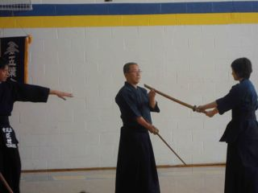
The Special practice with Uchimura-sensei (3/26/10)
Uchimura-sensei (2009 All Japan Kendo Champion) visited our dojo as a part of the AUSKF educational tour. He gave us a kendo seminar and after the seminar, all participants had chance to practice with Uchimura-sensei. Please visit our blog for more detailed information and pictures.special-practice-with-uchimura-sensei
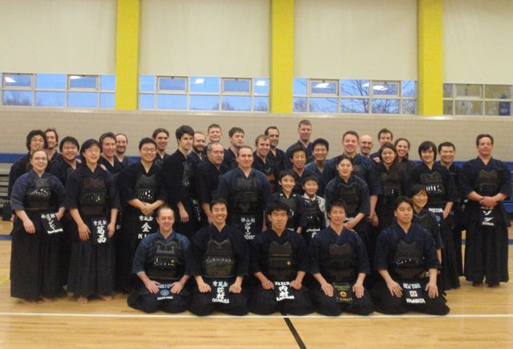
Shufukai Facebook
Please join us on Facebook for more up-to-date news and schedule information.
Copyright © 2007-2013 Boston Shufukai Kendo. All rights reserved. |